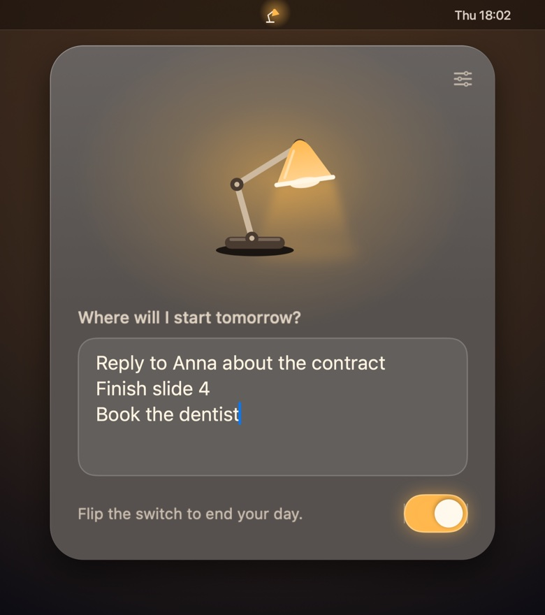
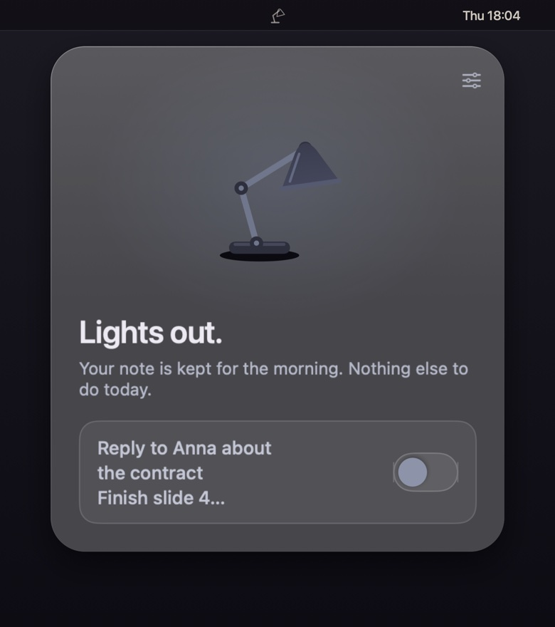
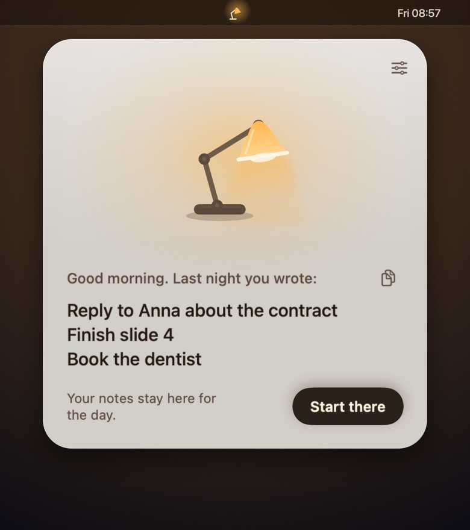
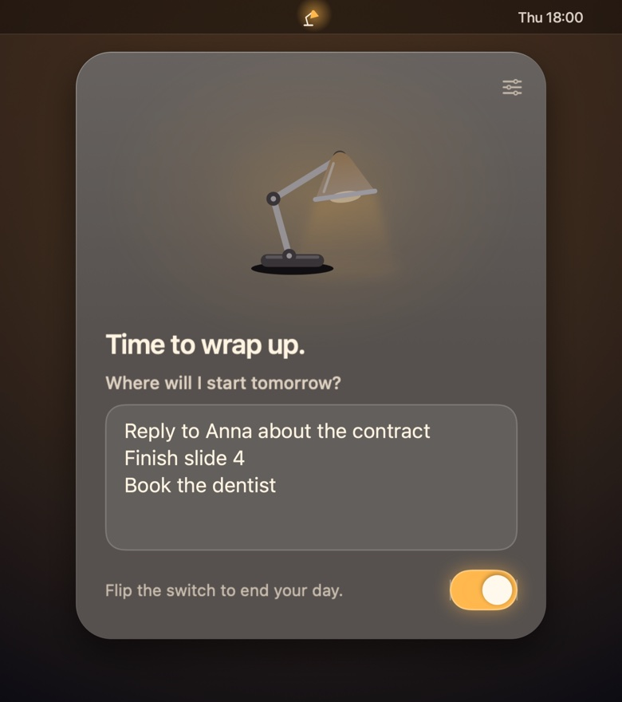
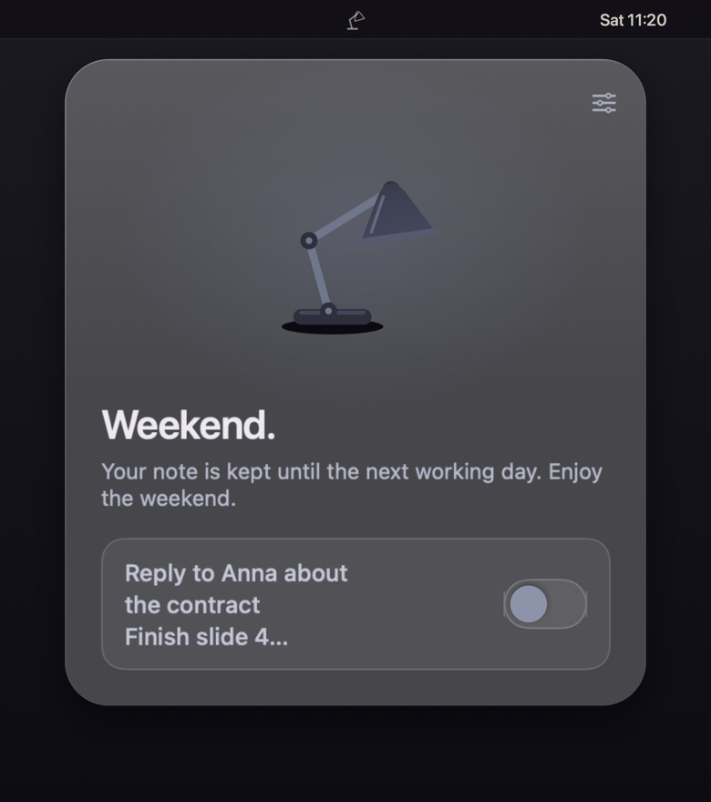
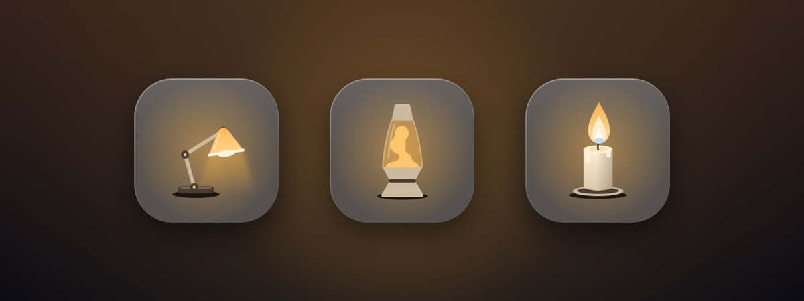
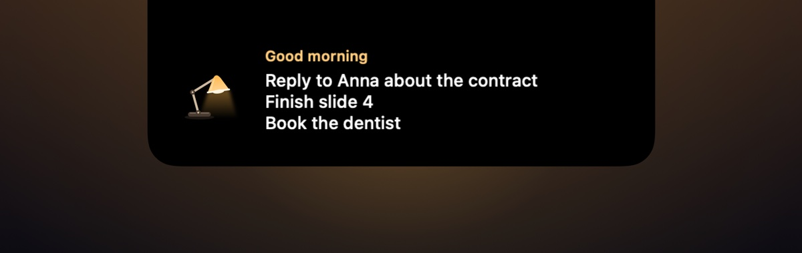

End the working day with one switch.
Last Light is a small lamp in your Mac's menu bar. In the evening you write where you will start tomorrow and flip the switch. The light goes out, and so does work.

One lamp, one note, one switch.
Unfinished work keeps running in your head. Writing down the next step, then switching something off, lets you put it down.
Write where you will start tomorrow.
One line or a few. Empty your head into the note.

Flip the switch.
The lamp goes dark. The day has an ending you can feel.

The note is waiting.
The lamp relights itself and shows you exactly where to begin.
Quiet help, when you want it.
Everything here can be switched off in settings.

A reminder to wrap up.
At the time you choose, the lamp asks you to finish. A small lamp on your desktop burns lower as that time gets close.

Weekends stay dark.
Switch off on Friday and the lamp waits until Monday morning. No reminders in between.

Choose your light.
An office lamp, a lava lamp or a candle, in seven glow colours or any hue you pick.

On a MacBook, the note slides out of the notch.
On other Macs and external displays it opens from the menu bar.
Yours, and only yours.
A lamp should not need a login.
Pay once
USD 2.99, one purchase. No subscription and no in-app purchases.
No account
Nothing to sign up for. Install it and the lamp is on.
Stays on your Mac
The app has no network access, so your notes cannot leave your Mac.
Tonight, switch work off.
For macOS 15 or later. In English and Russian.